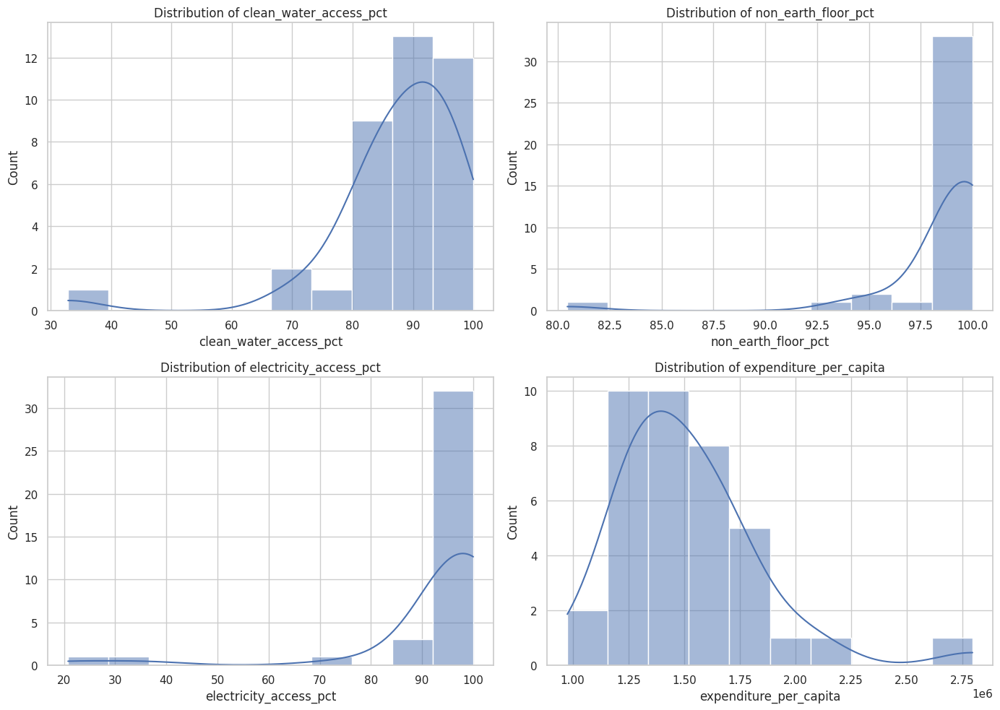

01 — OVERVIEW
Overview
This study turns provincial infrastructure and socioeconomic indicators into an interpretable binary classification problem. Logistic regression makes the direction and relative influence of each feature visible.
02 — FEATURE DISTRIBUTION
Feature distribution
Infrastructure indicators cluster near the upper range for many provinces, while expenditure per capita shows wider socioeconomic variation.

03 — INTERPRETATION
Interpretation
The coefficient view helps explain how clean water, electricity, flooring, and expenditure contribute to the benchmark-based vulnerability label.
04 — LIMITATIONS
Limitations
Perfect test performance must be interpreted cautiously because the evaluation sample is small and the target label is benchmark-based. Future work should use finer spatial data and repeated validation.